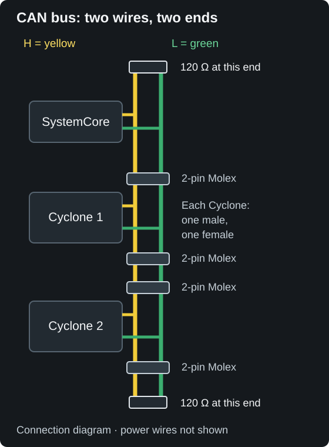

Wiring
Power, CAN, and USB-C all connect at the back of the motor.

Connections
| Connection | What it is |
|---|---|
| Power leads | Red: positive (+). Black: negative (−). These wires exit the bottom of the cover. |
| CAN FD | CAN H (yellow) and CAN L (green), with two 2-pin Molex connectors: one male and one female. |
| USB-C | Direct laptop connection for motor testing, settings, live measurements, and firmware updates |
| DFU Button | Firmware-recovery button, beside a power LED. Firmware & DFU |
| Status window | Seven lights; the two ends report controller state. Status lights |
Power
Connect the Cyclone’s power wires to a breaker- or fuse-protected output on the robot’s power distribution hub. The robot’s 12 V battery supplies this power. Connect red to positive and black to negative. Choose the breaker or fuse and power wire size for your robot’s electrical design and the applicable season rules. Set the supply current limit for the mechanism; software current limiting does not replace a breaker or fuse.
The small light beside the DFU Button indicates power from the main power wires. It is a power indicator, not a status code. If that light and both end lights are dark, check the motor’s power connection and breaker or fuse before troubleshooting CAN or code.
Cyclone includes reverse-polarity protection on its power input. Connect red to positive (+) and black to negative (−). If these wires are connected backwards, turn off robot power and correct the connection before continuing.
CAN

The CAN bus carries commands and measurements between SystemCore and the devices on your robot. Plug Cyclone into the rest of your robot’s CAN bus loop using its two supplied 2-pin Molex connectors, one male and one female. No crimping is needed for these CAN connections.
CAN H is yellow. CAN L is green. Keep yellow connected to yellow and green connected to green.
Give each Cyclone its own device number (CAN ID) from 1 to 62 so SystemCore can address the correct motor. Blue flashing end lights indicate a detected duplicate number. Change one of the duplicate numbers before running the motors. Status lights
The CAN bus needs a 120-ohm resistor, called a terminator, at each of its two ends. Terminators help the devices communicate reliably. Cyclone does not have one built in. If Cyclone is at an end of the CAN bus, add a terminator there. Some other robot devices already include termination, so check their instructions before adding another. Do not add a terminator at every motor.

The Cyclone has a CAN FD interface. Connect CAN H (yellow) and CAN L (green) to the matching wires in the robot’s CAN bus loop.
USB-C

Open SWYFT Link in Google Chrome on your laptop and connect a USB-C data cable to the Cyclone. USB-C is useful for testing off the robot or running a quick check before the CAN bus is connected. To run the motor, connect a 12 V FRC battery through a fused or breaker-protected power connection. CAN, SystemCore, and Driver Station are not required for standalone USB-C control. USB alone is enough for settings and firmware updates. Use either robot code or SWYFT Link to command a motor, not both at the same time.
USB-C on a robot: standalone USB-C testing does not need Driver Station. If the Cyclone is also receiving a robot signal over CAN, USB-C commands still follow Driver Station enable permission. A USB cable does not override a disabled robot.
Before you enable
- Motor mounted securely, with the mechanism supported and its travel clear. Mounting
- Red power wire connected to positive (+), black to negative (−), and the power light beside the DFU Button is on.
- For SystemCore control over CAN: CAN connectors plugged into the robot’s CAN bus loop, with H (yellow) connected to yellow and L (green) connected to green. Check both end terminators and give each Cyclone its own device number.
- Current limits set for the mechanism. Current limits